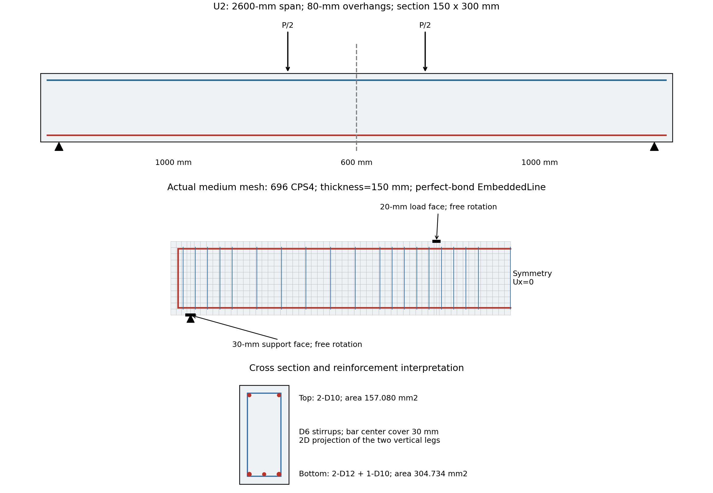
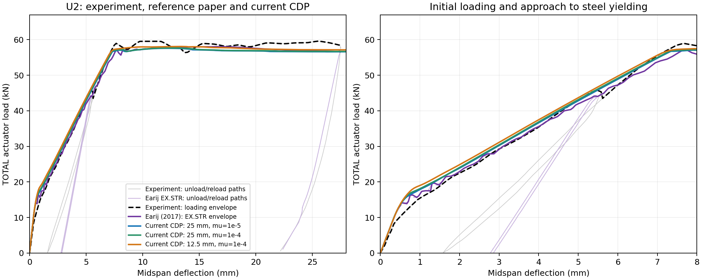
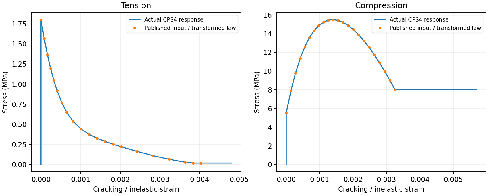
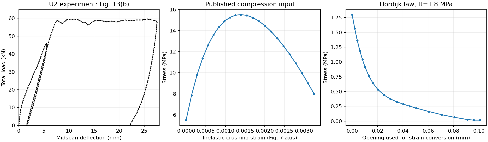
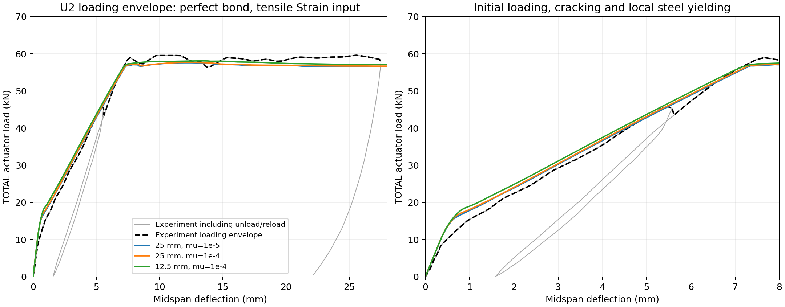
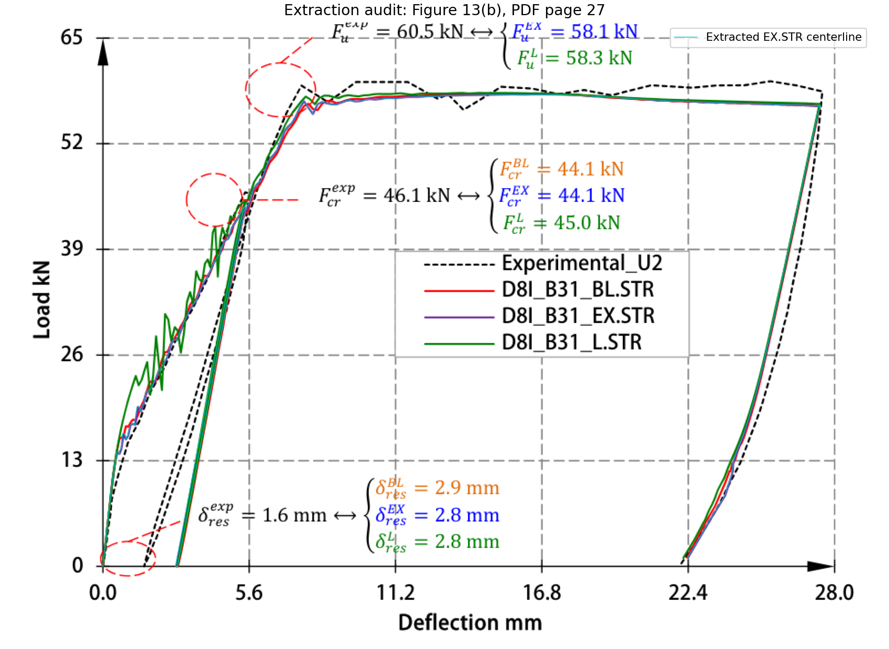
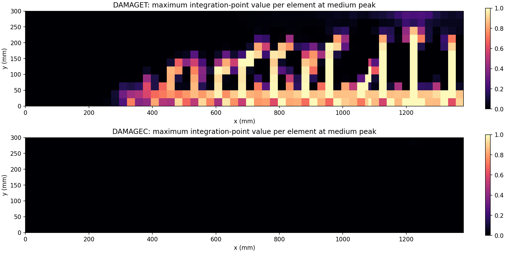

C.3 Earij U2 철근콘크리트 보의 실험 비교
실험 비교. Alfano 외 (2012)의 U2 시편을 Earij 외 (2017)의 자료와 함께 비교한다. 완전부착 매입철근과 인장 응력–변형률 입력을 사용하는 2D 평면응력 모델이다. 실험 중간의 제하·재하를 생략하여 단조 재하 외곽 곡선을 비교한다. 잔류 처짐과 제하강성은 판정 대상이 아니다.
모델과 재료
경간 2,600 mm, 전체 길이 2,760 mm, 폭 150 mm, 높이 300 mm이다. 두 가력점 사이 거리는 600 mm이다. 반경간 CPS4 모델에서 지점·가력면의 표면 절점들을 회전이 자유인 기준 절점에 연결한다.
콘크리트 탄성계수는 26 GPa, 환산 압축강도는 15.512 MPa, 인장강도는 1.8 MPa이다. 철근은 탄성계수 205 GPa, 항복강도 380 MPa의 완전소성 재료이다. 인장곡선은 Hordijk 관계를 메시별 소성변형률 축으로 변환한다. Strain 입력이 요소 길이를 자동 반영하는 것으로 해석하지 않는다.

Figure C.3.1 U2 Beam, Reinforcement and Medium Mesh실험·문헌 해석·현재 결과
실험 총하중은 반경간의 한 가력점 반력 절댓값의 두 배이다. 최대하중 오차는 논문 표기 실험값 60.5 kN, 곡선 오차는 원문 Figure 13(b)에서 추출한 재하 외곽 곡선을 기준으로 한다.
| 입력 | 콘크리트 요소 | 점성계수 | 최대 총하중 | 최대하중 오차 | 곡선 NRMSE |
|---|---|---|---|---|---|
| u2-medium | 696 | \(10^{-5}\) | 57.574 kN | −4.84% | 2.95% |
| u2-medium-stable | 696 | \(10^{-4}\) | 57.654 kN | −4.70% | 2.92% |
| u2-fine-stable | 2,784 | \(10^{-4}\) | 58.080 kN | −4.00% | 2.70% |
세 계산 모두 지정 가력변위까지 완료했다. 같은 기준으로 계산한 문헌 EX.STR 곡선의 NRMSE는 2.47%이다. 문헌은 3D·반복가력, 현재는 2D·단조가력이므로 비교는 공통 재하 경로에 한정한다.
메시·점성 변화에 따른 최대하중 차이는 각각 +0.74%·+0.14%이다. 전체 곡선 오차가 작아도 초기 구간의 하중 차이는 남으며, 압축 입력의 마지막 점 이후 거동에는 외삽 가정이 포함된다. 국부 균열·압괴 수렴이나 점성 0의 결과로 확대하지 않는다.

Figure C.3.2 U2 Experiment, Published EX.STR and Current CDP Results입력 변환과 재료점 검산
Hordijk 인장 연화의 파괴에너지는 0.0353542 N/mm이다. 균열 열림을 중간 메시 25 mm·세밀한 메시 12.5 mm로 나눈 뒤 현재 CDP의 소성변형률 축으로 변환한다.
압축도 원문의 비탄성변형률과 손상에서 소성변형률로 변환한다. 인장 잔류강도는 1%, 손상 상한은 0.99이다. 재료점 계산과 변환 곡선의 최대 응력 차이는 인장 0.0000471 MPa, 압축 0.000751 MPa이며 반력으로 환산한 응력 차이는 각각 0.0000667·0.000733 MPa이다. 철근의 별도 재료점에서도 항복 이후 380 MPa를 유지하는 것을 확인했다.

Figure C.3.3 Transformed Tensile and Compressive Laws and Actual Material-Point Responses원문 Figure 7의 압축 강도·손상 좌표와 Figure 13(b)의 실험 곡선은 축 보정값과 함께 보존했다. 실험 표기 최대값 60.5 kN과 그림에서 추출한 최고점 약 59.59 kN을 구분한다. 논문의 46.1 kN은 제하 시작 수준이며 첫 균열 발생하중으로 사용하지 않는다.

Figure C.3.4 Digitized Source Curves and Axis Calibration세 구조 해석의 전체 완료 기록
세 조건 모두 가력점 변위 −26.5 mm까지 완료했다. 아래 처짐은 콘크리트 중앙 하단의 변위이며 가력점 변위와 다르다. 실행 시간은 당시 실행파일과 계산 환경의 기록이다.
Table C.3.1 Peak, Final State and Execution Records
| 입력 | 최대점 중앙 처짐 (mm) | 최종 중앙 처짐 (mm) | 최종 총하중 (kN) | 증분 수 | 해석 시간 |
|---|---|---|---|---|---|
| u2-medium | 12.110 | 29.953 | 56.586 | 488 | 477.278 s |
| u2-medium-stable | 12.438 | 29.936 | 56.676 | 410 | 298.712 s |
| u2-fine-stable | 13.255 | 28.470 | 57.120 | 626 | 2,321.580 s |
실험 재하 외곽 곡선과 현재 해석만 비교할 때 중앙 처짐 0∼27.5 mm, 0.1 mm 간격의 RMSE는 각각 1.785·1.764·1.632 kN이다. NRMSE는 RMSE를 표기 최대하중 60.5 kN으로 나눈 값으로 각각 2.950·2.916·2.697%이다. 문헌 EX.STR까지 함께 비교한 앞 표는 공통 구간 0∼27.4 mm를 사용하므로 값이 조금 다르다.

Figure C.3.5 All Three Completed U2 Analyses: Full and Initial Loading Responses메시·점성 민감도
Table C.3.2 Mesh and Viscosity Sensitivity over 0–27.5 mm
| 변화 | 최대하중 변화 | 두 곡선 차이 NRMSE | 하중–처짐 면적 변화 |
|---|---|---|---|
| 25 mm, 점성 \(10^{-5}\to10^{-4}\) | +0.139% | 0.250% | +0.243% |
| 점성 \(10^{-4}\), 25→12.5 mm | +0.739% | 1.018% | +1.101% |
중간·세밀한 메시의 점성 \(10^{-4}\) 비교에서 전역 응답 차이는 작지만, 국부 압축 소성변형률 최댓값은 0.00962와 0.05589로 차이가 크다. 세밀한 메시의 점성 \(10^{-5}\) 및 중간 메시의 \(10^{-6}\) 실행은 시간이 길어져 중단했으므로 완료 결과에 포함하지 않는다.
초기 구간과 문헌 해석의 오차
Table C.3.3 Errors Recomputed on the Common 0–27.4 mm Loading Envelope
| 해석 | 전체 RMSE (kN) | NRMSE | 0∼5 mm RMSE (kN) | 8∼27.4 mm RMSE (kN) |
|---|---|---|---|---|
| Earij EX.STR | 1.497 | 2.474% | 1.102 | 1.566 |
| u2-medium | 1.786 | 2.952% | 1.673 | 1.876 |
| u2-medium-stable | 1.766 | 2.919% | 1.842 | 1.801 |
| u2-fine-stable | 1.634 | 2.701% | 2.415 | 1.367 |
문헌 EX.STR의 표기 최대하중은 58.1 kN이며 추출 곡선의 최고점은 약 58.015 kN이다. 위 오차는 논문이 보고한 값이 아니라 같은 실험곡선과 구간으로 직접 계산한 값이다. 아래 표는 각 중앙 처짐에서의 실험 대비 하중 오차이며, 작은 전체 NRMSE가 모든 점의 작은 오차를 뜻하지 않는다.
Table C.3.4 Pointwise Load Error against the Experiment
| 중앙 처짐 (mm) | Earij EX.STR | u2-medium | u2-medium-stable | u2-fine-stable |
|---|---|---|---|---|
| 1 | +7.51% | +15.78% | +17.36% | +23.22% |
| 3 | −0.34% | +3.44% | +4.05% | +6.43% |
| 5 | −2.44% | −0.48% | +0.20% | +1.50% |
| 8 | −4.07% | −2.13% | −1.95% | −1.37% |
| 12 | −2.08% | −2.30% | −2.17% | −1.56% |
| 20 | −1.34% | −2.58% | −2.46% | −1.60% |
| 27 | −3.61% | −3.70% | −3.56% | −2.76% |
최대하중과 전체 재하곡선은 문헌 해석과 비슷한 수준이다. 초기 0∼5 mm에서는 문헌 해석의 차이가 더 작고, 8 mm 이후에는 현재 세밀한 메시의 차이가 더 작다. 그림의 선 두께·좌표 추출 오차를 고려해 소수점 아래의 차이만으로 성능 우열을 단정하지 않는다.

Figure C.3.6 Published Figure 13(b) and Extracted EX.STR Curve철근 항복·손상 분포와 압축표 범위
전 프레임의 가력점·지점 반력 합을 최대 가력점 하중으로 정규화한 최대 불평형은 0.003% 이하였다. 지점 수직변위와 평면응력 조건을 확인했고 하부 철근 응력은 380 MPa를 넘지 않았다.
Table C.3.5 First Local Steel Yield and Compression-Table Extrapolation
| 입력 | 최초 국부 철근 항복 처짐 / 총하중 (mm / kN) | 압축표 범위 최초 초과 처짐 (mm) | 그 이전 구간 NRMSE | 최대 압축 소성변형률 |
|---|---|---|---|---|
| u2-medium | 7.334 / 56.696 | 14.437 | 2.478% | 0.00984 |
| u2-medium-stable | 7.312 / 56.778 | 14.753 | 2.556% | 0.00962 |
| u2-fine-stable | 7.125 / 56.266 | 9.752 | 3.251% | 0.05589 |
압축 입력의 마지막 소성변형률은 약 0.002965이며 이후 강도·손상을 일정하게 유지한다. 세밀한 메시에서는 최대하중보다 먼저 일부 적분점이 이 범위를 넘으므로 최대하중에도 연장 가정이 포함된다. 표의 범위 초과 전 NRMSE는 비교 구간 길이가 서로 다르다. 최초 초과를 보 전체의 압괴로 해석하지 않는다.

Figure C.3.7 Tensile and Compressive Damage at the Medium-Mesh Peak Load손상 그림은 u2-medium 최대하중 시점의 요소별 적분점 최댓값이다. 실험의 균열폭·균열지도와 정량 비교한 결과는 아니다. 완전부착·2D·단조 재하 범위에서 판정하며 잔류 처짐·제하강성·국부 압괴 수렴으로 확대하지 않는다.
전체 수치 자료
시간·중앙 처짐·총하중·철근 응력·압축변형률·손상 전체 이력은 사례 폴더의 u2-medium-curve.csv, u2-medium-stable-curve.csv, u2-fine-stable-curve.csv에 있다. 각 실행의 입력·HDB·로그·실행파일 해시는 results 아래에 보존한다. material-point의 최초 실행 HDB·로그는 original-results/material-point에 별도 보존하며, 최초 실행과 현재 CSV는 동일하다.
입력 파일과 실행
Examples/C-RCBeam-EarijU2/에 실험·문헌 곡선 좌표, 입력, 후처리와 전체 결과가 있다.
Examples\C-RCBeam-EarijU2\run.bat u2-medium
Examples\C-RCBeam-EarijU2\run.bat u2-medium-stable
Examples\C-RCBeam-EarijU2\run.bat u2-fine-stable
python Examples\C-RCBeam-EarijU2\post.py u2-medium u2-medium-stable u2-fine-stable
python Examples\C-RCBeam-EarijU2\compare-reference.py
실행은 저장소의 tmp에서 수행하며 입력과 출력은 results에 보존한다. 원문 PDF는 Research/CDP의 참고문헌에 있다. 후처리는 함께 배치한 C-ConcreteBeam-Fracture의 HDB 읽기 스크립트를 사용한다.